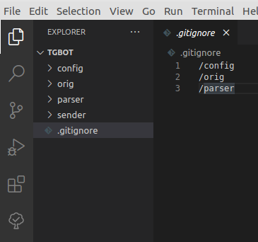
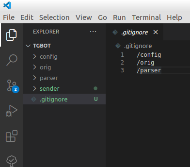
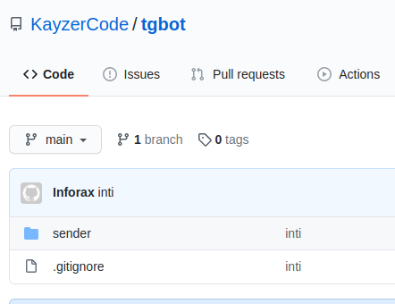

Работаем с Гитом aka Git
09-10-2020
Это самый первый шаг, который нужно сделать.
Создаем проект. Или открываем существующий. Переходим в папку проекта.
Git Ignore
Нам нельзя отправлять в сеть логины и пароли, которые используются в проекте.
Например доступ к базе данных, или доступ к почтовым аккаунтам.
Поэтому, мы выпиливаем такие данные из файлов и создаем конфигурационные файлы типа config.php, settings.php. В них мы будем хранить логины, пароли и др. И выделяем конфигам свою папку.
Затем создаем файл который называется .gitignore
Пример содержимого такого файла
config.php
settings.php
/keys
/configs
Все перечисленные тут файлы и папки будут игнорироваться при синхронизации.

Далее нужно инициализировать гит в папке проекта.
Запускаем в консоли
git init
Как видим, картинка сразу изменилась.

Редактор подсветил зеленым то, что будет синхронизироваться с удаленным гитом.
Удаленный гит – это внешний хостинг типа Github или Bitbucket и др.
Мы возьмем гитхаб.
Создаем новый репозиторий, копируем команды, которые позволят нам отправить свой код на гитхаб.
Переходим в консоль редактора и выполняем по очереди команды:
git remote add origin [url to rep] git add . git commit -m "first commit" git branch -M main git push -u origin main
В результате мы на удаленном гите увидим файлы нашего проекта:

Читайте про боту с удаленными гитами тут
Remove Remote
$ git remote remove
2. Add Remote
$ git init .
git remote add origin
git add .
git pull
git push -u origin master
Если возникла проблема с unrelated histories:
git pull origin master --allow-unrelated-histories